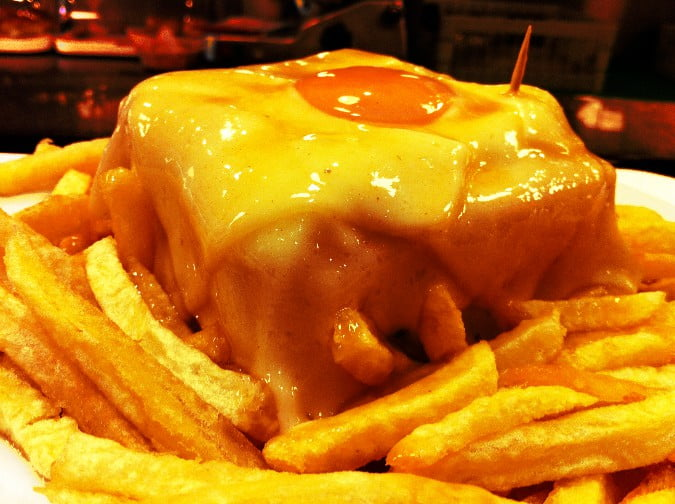

Francesinha

Description:
The francesinha is a typical dish from the north of Portugal, particularly from the Porto region.
A multi-tiered sandwich, it consists of three pieces of bread, filled with different meats, covered with cheese, and served on a bed of sauce.
The slices of bread are interspersed with ham, steak, and sausages. On the assembled sandwich are slices of melted cheddar cheese covering it completely.
Served on a deep plate filled with sauce, it’s garnished with a fried egg and lots of fries around it.
Ingredients:
- Crushed tomatoes
- Beer, lager beer of your choice
- Port wine
- Beef fillets
- Butter
- Onion
- Garlic
- White sandwich bread
- Ham
- Portuguese linguica sausages
- Cheese
How to prepare:
- Start assembling your francesinha sandwich on a slice of bread
- Add the ham and steak and then cover with another slice of bread
- Add the sausage and cover with the last slice of bread
- Once the sandwich is well assembled, cover with a slice of cheese on each side
- Pour warm sauce over each sandwich covering it entirely.
- Surround each sandwich with plenty of french fries and enjoy
- Serve some additional sauce to use while eating your sandwich.